16/02/2015 — Nhịp nhanh QRS rộng ở một bệnh nhân 20 mấy tuổi
Bản dịch tiếng Việt của bài "Wide Complex Tachycardia in a 20 something." – Dr. Smith’s ECG Blog. Giữ nguyên toàn bộ 13 hình ảnh của bản gốc.
Ca này do một cựu bác sĩ nội trú gửi đến. Anh ấy xin được giấu tên vì danh tính của anh có thể làm lộ thông tin bảo mật của bệnh nhân.
Ca bệnh
Một phụ nữ 20 mấy tuổi đến khám vì hồi hộp đánh trống ngực và choáng váng. Cô không có tiền sử bệnh gì ngoại trừ một tình trạng “nhịp nhanh trong tử cung” đã được điều trị cho tới khi còn rất nhỏ. Từ đó đến nay cô không gặp vấn đề gì và không dùng thuốc nào. Cô không có chẩn đoán cụ thể nào về bất thường dẫn truyền.
Mẹ cô kể rằng cô suy nghĩ không minh mẫn (“cư xử như người say”). Bệnh nhân khai có ngất khi gắng sức và đã ngất trên đường đến bàn phân loại (triage).
Khám: Thể trạng rất to lớn, cao 5′ 10″ (178 cm) và nặng 346 lbs. (156 kg).
Mạch: 235
Huyết áp: 121/67
SpO2: 98% khi thở khí trời
Ngoài ra không có gì đặc biệt.
Điện tâm đồ:

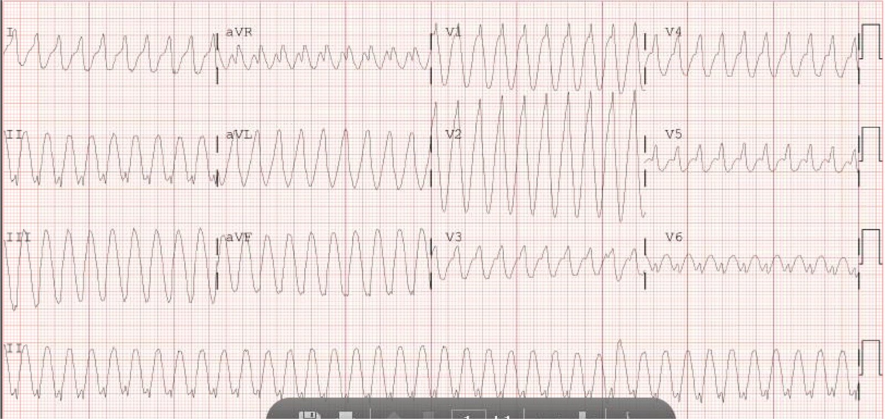
Có những sóng nhỏ ở chuyển đạo II chạy dọc phía dưới. Đây có phải là sóng P ngược dòng không?
Các dải nhịp, đáng tiếc là không được lưu lại, theo mô tả cho thấy nhịp không đều, với tần số dao động từ 180-250.
Vì nhịp không đều này, bác sĩ điều trị lo ngại đây là rung nhĩ kèm WPW, và do đó ngần ngại không dùng adenosine.
Điều gì có thể gây ra nhịp này nhưng lại có phần không đều trên dải nhịp? Liệu đây có thể là rung nhĩ không? Adenosine có thật sự bị chống chỉ định không?
Điều rất quan trọng là bạn phải nhận ra rằng điện tâm đồ trên KHÔNG THỂ là rung nhĩ kèm WPW.
1) nhịp hoàn toàn đều (tôi thậm chí đã dùng compa đo)
2) Khi có rung nhĩ kèm WPW, các phức bộ QRS sẽ đa dạng (multiform).
Diễn biến lâm sàng:
Đã dùng procainamide. Không có đáp ứng.
Xét nghiệm bình thường. K là 3,5 mEq/L.
Sốc điện chuyển nhịp là bước tiếp theo. Vì huyết áp ổn định sau khi truyền một ít dịch, đã dùng propofol liều thấp (60 mg) để an thần.
Chế độ đồng bộ đã được bật; đây là hình ảnh:

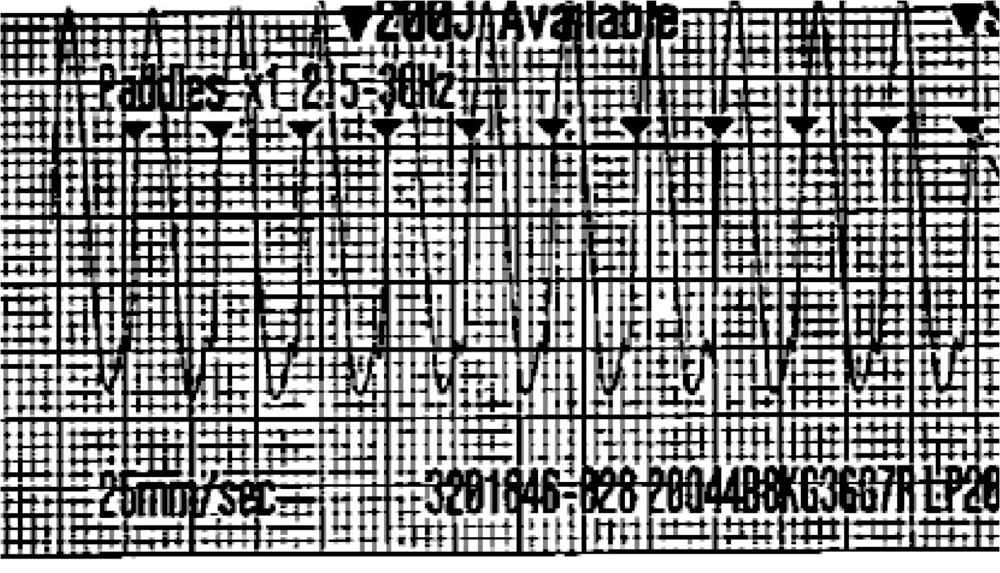
Xem bài này minh họa việc nhận diện QRS sai lầm và nguy hiểm.
Sốc điện chuyển nhịp được thực hiện ở mức 200J hai pha.
Đây là kết quả:

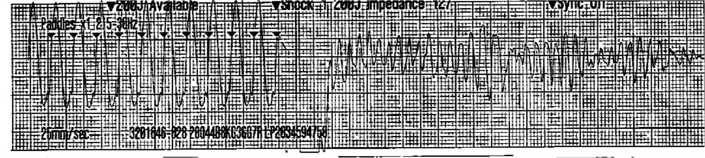
Vẫn còn mạch, nên đó hẳn là VT đa dạng. Huyết áp tâm thu là 70. Bệnh nhân được dùng 2 g Mg, và được khử rung ở mức 200 J hai pha. Đây là kết quả:

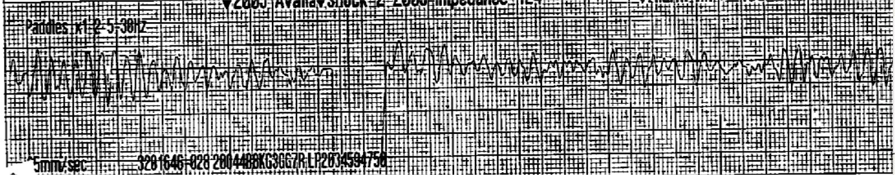
Sau một vài lần khử rung, nhịp chuyển trở lại thành nhịp nhanh QRS rộng:

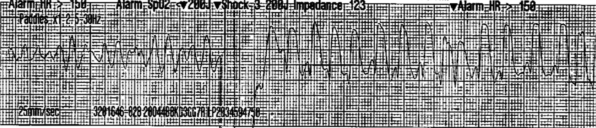
Màu da và huyết áp đang cải thiện và cô bắt đầu tỉnh lại.
Bác sĩ hội chẩn đề nghị dùng amiodarone và sốc điện chuyển nhịp lại.
Việc này đã được thực hiện nhưng không thành công.
Cô lại chuyển sang rung thất một lần nữa:

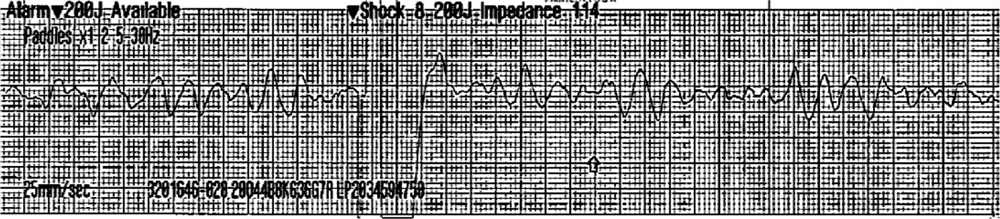
Bắt đầu ép tim. Cô được tiêm bolus esmolol rồi truyền duy trì, sau đó được khử rung lần nữa, tất cả đều trong lúc đang ép tim:

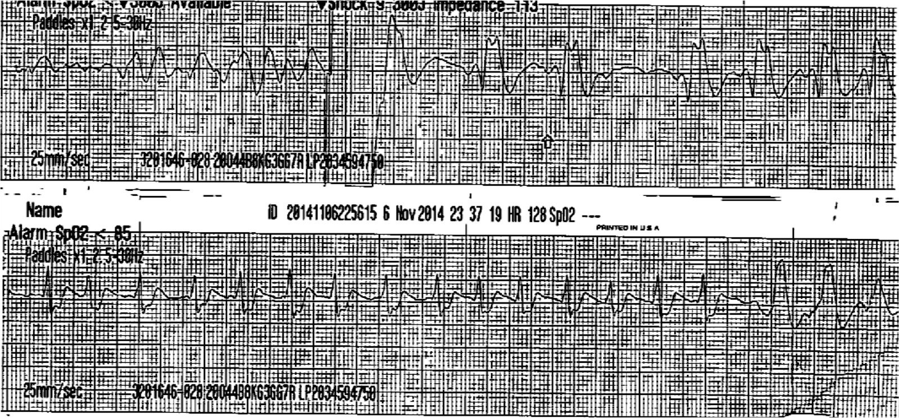
Các dải ghi monitor tiếp theo:

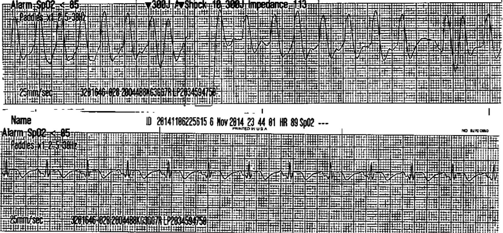
Điện tâm đồ 12 chuyển đạo:

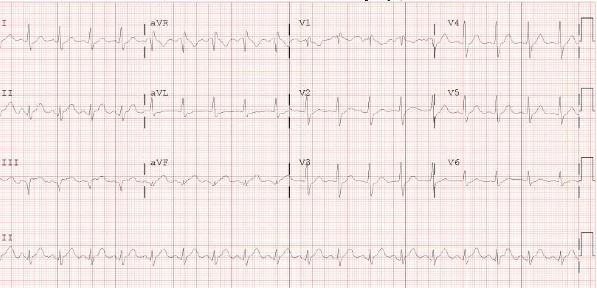
Cô được duy trì truyền esmolol và không còn rối loạn nhịp nào nữa. MRI tim bình thường. Siêu âm tim bình thường. Đã thực hiện thăm dò điện sinh lý (EP). Xem bên dưới.
Chuyện gì đã xảy ra?
Có thật là nhịp không đều không? Chúng ta phải tin lời của bác sĩ.
Đó có phải là rung nhĩ không? Trên điện tâm đồ ban đầu, chắc chắn đó không phải là rung nhĩ. Do đó, nếu nhịp không đều là rung nhĩ, thì bệnh nhân đã chuyển qua chuyển lại giữa rung nhĩ nhanh và nhịp nhanh QRS rộng đều. Điều này rất khó xảy ra.
Vậy nó còn có thể là gì khác?
Nó có thể chính là điều đã được chứng minh qua thăm dò điện sinh lý: đường dẫn truyền kép trong nút AV và WPW (không có sóng delta, và do đó có ‘dẫn truyền ẩn’. Đọc bài này để hiểu về dẫn truyền ẩn.
Trong tình huống này, rối loạn nhịp là nhịp nhanh vòng vào lại nhĩ thất (AVRT) ngược chiều (antidromic), đi xuống qua đường phụ và đi lên qua một trong hai đường dẫn truyền của nút AV. Tần số tạo ra phụ thuộc vào đường nào được sử dụng.
Dưới đây là một số sơ đồ do chính bác sĩ điều trị vẽ rất đẹp:

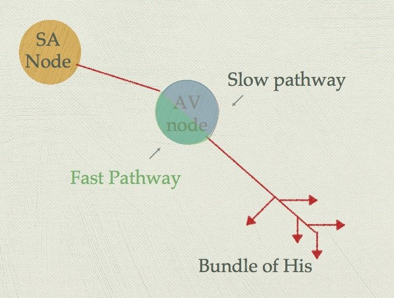
Đường nhanh: dẫn truyền nhanh, thời kỳ trơ dài hơn
Đường chậm: thời kỳ trơ ngắn hơn
Thêm một đường phụ vào đó:

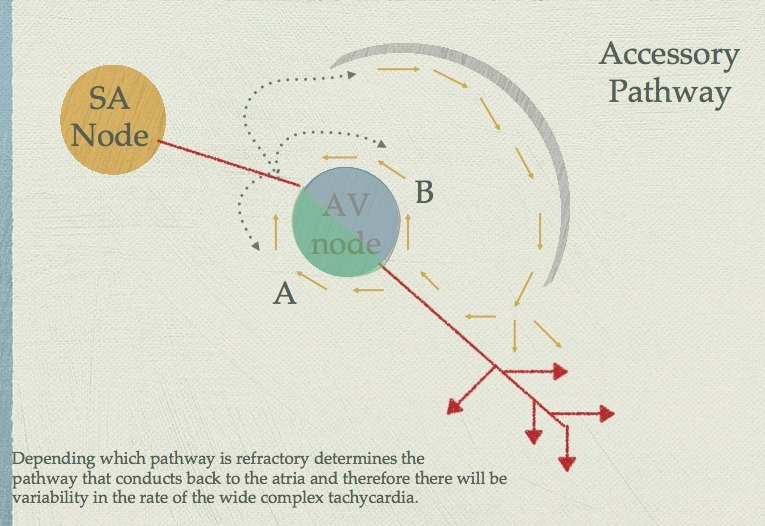
Đã hoàn tất triệt đốt đường phụ (bypass tract – accessory pathway).
Tôi sẽ xử trí ca này như thế nào?
Tôi sẽ thử dùng adenosine. Đây không phải rung nhĩ kèm WPW. Nếu là VT, adenosine vẫn an toàn. Nó có thể có hiệu quả. Nếu adenosine không hiệu quả, thì sốc điện chuyển nhịp.
Tôi tin rằng adenosine đã có thể có hiệu quả ở ca này.
Tôi đã trao đổi với Ken Grauer về các bình luận của ông bên dưới.
Giờ đây chúng tôi đã thống nhất rằng đây thực sự là một nhịp nhanh QRS rộng do WPW ngược chiều (antidromic).
===================================
BÌNH LUẬN CỦA TÔI, bởi KEN GRAUER, MD (30/5/2018):
===================================
Một ca bệnh hấp dẫn — được đăng lần đầu vào tháng Hai năm 2015 — và Dr. Smith đăng lại hôm nay vì “tính vượt thời gian” của nó. Tôi luôn thấy thú vị khi xem lại các bản ghi đã từng diễn giải trước đây — vì đôi khi điều chúng ta nói trước kia có thể không còn là điều chúng ta nghĩ bây giờ. Có 2 lý do cho điều này: i) Độ biến thiên trong cùng người đọc (tức là cùng một người đọc, khi được đưa lại đúng bản ghi đó vào một thời điểm sau, lại nói một điều khác …). Y văn cho thấy điều này xảy ra ~10-20% số lần ở những người đọc chuyên gia; và, ii) Chúng ta có thể đã học được điều gì đó kể từ lần đầu tiên diễn giải bản ghi! Vì vậy, tôi thấy thật khiêm nhường khi nhìn lại diễn giải hôm nay của mình ( = ngày 30 tháng Năm năm 2018) khác thế nào so với những gì tôi đã viết trong 2 bình luận hồi tháng Hai năm 2015 …
- Năm 2018 — tôi thấy một nhịp nhanh đều tần số ~240/phút, thoạt nhìn có vẻ rộng — nhưng tôi ngờ rằng thực ra nó không rộng. Đặc biệt, các chuyển đạo V4,V5,V6 gợi ý một phức bộ QRS hẹp. Đường thẳng đứng màu ĐỎ mà tôi vẽ trong Hình 1 cho thấy nơi tôi nghĩ là giới hạn của phức bộ QRS trên dải nhịp chuyển đạo II dài ở phía dưới. Nhìn vào đúng điểm này của chuyển đạo II dài trên các chuyển đạo I, II, III; và aVR; aVL, aVF — đường thẳng đứng màu XANH LÁ gợi ý nơi tôi nghĩ có thể là giới hạn của phức bộ QRS. Liệu đây có thực sự là một QRS hẹp kèm bất thường sóng ST-T rõ rệt thứ phát do nhịp nhanh rõ rệt? BẠN nghĩ sao? Có thể có phần nào dẫn truyền lệch hướng — nhưng có lẽ QRS không hề rộng như thoạt nhìn …

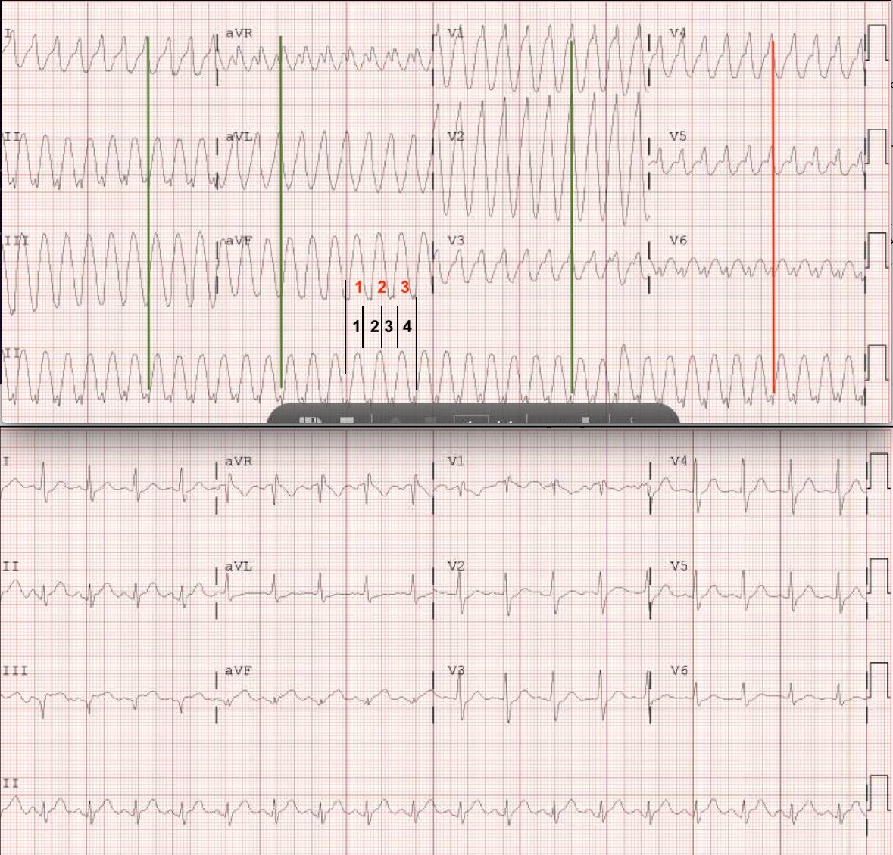
-
- Ngay cả khi phức bộ QRS là rộng — diễn giải của tôi ở một phụ nữ 20 tuổi vốn được cho là khỏe mạnh, đến viện với huyết động ổn định trong một nhịp nhanh QRS rộng đều với tần số nhanh như thế này (~240/phút) — sẽ là rất có thể đây là AVRT dẫn truyền xuôi dòng (tức là, đi xuống qua một AP trước). Trong cả hai trường hợp (tức là, dù QRS hẹp hay rộng) — tôi hoàn toàn đồng ý với Dr. Smith rằng Adenosine dường như rõ ràng là thuốc được lựa chọn! (tức là, khả năng gây tác dụng bất lợi kéo dài đáng kể thấp — và khả năng rất cao chuyển nhịp được AVRT dù dẫn truyền xuôi dòng hay xuôi chiều).
-
- Điểm lâm sàng cuối cùng tôi muốn nêu liên quan đến cách ước tính tần số nhanh và chính xác khi nhịp đều và nhanh. Tôi dùng Phương pháp “Cách-Một-Nhát” hoặc “Cứ-Mỗi-Ba-Nhát”. Ở ca này tôi dùng phương pháp “Cứ-Mỗi-Ba-Nhát”. Hãy tìm một phần của phức bộ QRS bắt đầu hoặc kết thúc trên một đường kẻ đậm. Đếm số ô lớn cần để ghi được 3 nhát. Điều này cho phép bạn tính được 1/3 tần số. Ở ca này — cần chưa đến 4 ô lớn một chút (số màu ĐEN) để ghi được 3 nhát (chữ màu ĐỎ). Do đó 1/3 tần số ~80/phút X 3 = ~240/phút là tần số tim ở ca này. Cách này RẤT hữu ích, vì dù AVNRT có thể có tần số nhanh như vậy — người ta bắt đầu nghĩ nhiều hơn tới AVRT khi tần số nhanh đến mức này …
-
- Lưu ý rằng tôi đã gắn điện tâm đồ 12 chuyển đạo sau chuyển nhịp vào phía dưới Hình 1. Chẳng phải QRS hẹp trên bản ghi sau chuyển nhịp giống với điều tôi đã gợi ý ở trên, rằng có thể phản ánh một QRS hẹp trong cơn nhịp nhanh (các đường thẳng đứng màu ĐỎ và XANH LÁ) sao?
- Chúng tôi được cho biết rằng thăm dò điện sinh lý (EP) cho thấy “Đường dẫn truyền kép trong nút AV và một Đường phụ, nhưng không có sóng Delta” — do đó là AVRT trong đó dẫn truyền xuôi chiều (tức là, đi xuống qua đường nút AV bình thường trước [đó là lý do QRS có thể hẹp] — rồi quay ngược lên qua AP). Vì không thấy sóng delta trên cả bản ghi nhịp nhanh lẫn bản ghi sau chuyển nhịp — chẳng phải giả thuyết của tôi là hợp lý (nếu không nói là có khả năng) rằng QRS trên bản ghi ban đầu (PHÍA TRÊN trong Hình 1) thực ra hẹp vì đây là AVRT xuôi chiều kèm thay đổi sóng ST-T rõ rệt sao?